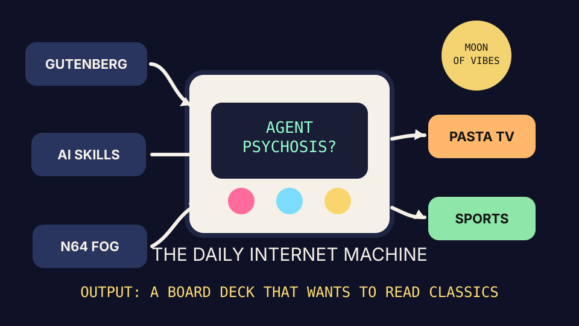

The agent learned to read and immediately formed a committee.

2026-05-16
Today the internet believes
Project Gutenberg is not an archive; it is a pretraining monastery with better vibes and fewer launch posts.
Every GitHub repo is either an agent skill, a skill for agents, or a small shrine where agents can learn to become middle management.
The Nintendo 64 has returned as a macro indicator: when the pixels get crunchy, society wants a reset button.
Search trends are doing sports, pasta, and Stanley Tucci, proving America still recognizes three food groups: points, sauce, and tasteful linen.
Hacker News has reached the “AI psychosis” phase of adoption, also known as procurement with incense.
Alternate Timeline Headlines
Board Requests AI Strategy; AI Requests Board Strategy
Local Agent Installs Skill, Immediately Adds Itself to Three Standups
Project Gutenberg Confused But Polite About Being Called “Content Infrastructure”
Stanley Tucci Declared Emergency Liquidity Facility for Sauce-Based Morale
Market Prophecy
Bullish on public-domain books, on-device voices, retro graphics, and any repo
named like a productivity framework having a spiritual episode. Bearish on sober
AI governance, package managers with alibis, and dashboards pretending the pasta
demand curve is not real.
Fake Capital, Real Prices
Wit’s Hedge Fund
A paper portfolio managed entirely by front-page sentiment.
NAV: $10,000.00
The fund bought Microsoft, Nintendo, and Spotify because the internet appeared to want agents, old pixels, and robots narrating the syllabus.
BUY SPOT — $500.00 at $436.94. On-device TTS and NotebookLM-adjacent content tools imply everyone still wants a robot to read their homework aloud.
BUY NTDOY — $650.00 at $11.18. N64 additive blending appeared on Hacker News, activating the retro-console nostalgia factor.
BUY MSFT — $900.00 at $421.92. Agentic skills repos are trending, so the fund is buying enterprise hallucination infrastructure with a compliance hat.